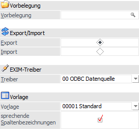
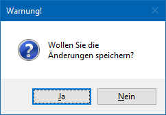
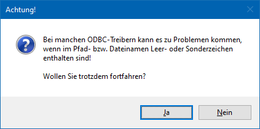
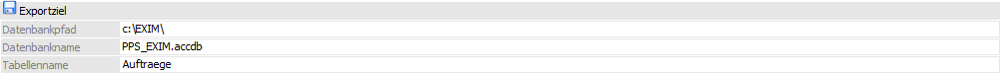

Folgende Einstellungen stehen beim Export zur Verfügung:
Einstellungen - Alle Register

Ø Vorbelegung
Über die Vorbelegung, welche in allen Register zur Verfügung steht, können die Einstellungen eines Ex- bzw. Importvorgangs gespeichert werden. Wurde bereits eine Vorbelegung definiert, kann diese durch Drücken der F9-Taste gesucht werden. Wurde noch keine Vorbelegung definiert, kann diese durch eine Eingabe im Feld "Vorbelegung" angelegt werden. Wurden alle Eingaben durchgeführt, wird die Vorbelegung durch Drücken der F5-Taste bzw. des Buttons "Ok" gespeichert.
Hinweis
Wird mit einer bestehenden Vorbelegung gearbeitet und der Ex- bzw. Import mit Hilfe der Taste F5 bzw. des Buttons "Ok" gestartet, erfolgt eine Sicherheitsabfrage, ob mögliche Änderungen der Einstellungen in der Vorbelegung gespeichert werden sollen.

Ø Export/Import
An dieser Stelle wird "Export" ausgewählt.
Ø EXIM-Treiber
An dieser Stelle erfolgt die Auswahl des ODBC-Treibers, welcher verwendet werden soll. Dieser hat eine direkte Auswirkung auf die möglichen Eingabefelder des Bereichs "Exportziel / Datenquelle".
Achtung
Die angebotenen Treiber sind abhängig von der Installation des PCs , wobei alle vorhandenen 32-Bit ODBC-Treiber zur Verfügung stehen (mesonic ist für die Funktionsfähigkeit bzw. das Vorhandensein der Treiber nicht verantwortlich).
Hinweis
Je nachdem, welche ODBC-Treiber verwendet werden bzw. welche ODBC-Treiber-Version verwendet wird, kann es zu ungewünschten Verhalten des Exports bzw. Imports kommen, wenn Sonderzeichen im Verzeichnisnamen oder im Datenbankname vorkommen. Aus diesem Grund wird, wenn solche Sonderzeichen verwendet werden, eine entsprechende Hinweismeldung ausgegeben:

Achtung - Treiberauswahl
Um sicherzustellen, dass Notizfelder in voller Länge exportiert werden, sollte je nach verwendetem Treiber (Access- oder SQL-Treiber) der erste auswählbare Treiber aus der Auswahlliste verwendet werden. D.h. ist die Auswahlmöglichkeit an Treibern der Reihenfolge nach z.B. "02 - Microsoft Access Driver (*.mdb)", "10 - Microsoft Access Treiber (*.mdb)" und "16 - Driver do Microsoft Access (*.mdb)", dann sollte in diesem Fall "02 - Microsoft Access Driver (*.mdb)" selektiert werden. Andernfalls wird das Notizfeld in der Regel nur mit 255 Zeichen exportiert.
Achtung - Textdateien
Wenn ein Export von Textdateien ausgeführt wird, so wird eine SCHEMA.INI-Datei angelegt, welche die Dateibeschreibung der Exportdatei beinhaltet.
Wenn sich die Vorlage ändert, so hat dieses keine Auswirkung auf die bereits erzeugte SCHEMA.INI-Datei und es würde die Fehlermeldung "Die Tabellen existieren bereits und haben einen anderen Aufbau als die gewählte Vorlage!" ausgegeben werden. Damit der Export wieder "normal" durchgeführt werden kann, muss dieses Dokument entsprechend angepasst oder gelöscht (und damit beim nächsten Export neu angelegt) werden. Ebenso bedarf es, dass die vorhandenen Exportdateien gelöscht werden.
Ø Vorlage
An dieser Stelle wird die Vorlage hinterlegt, welche für den Export verwendet werden soll.
Hinweis
Mit Hilfe der Vorlage wird definiert, welche Felder exportiert bzw. später importiert werden sollen. Zusätzlich können Vorbelegungen hinterlegt werden.
Ø sprechende Spaltenbezeichnungen
Ist diese Checkbox aktiv, so erhalten die exportierten Spalten den Namen des ursprünglichen Feldes. Ansonsten werden die Spalten nach den Spaltenbezeichnungen gemäß Datenbank (z.B. C007) benannt.
Einstellungen - Register "Produktionsaufträge"
Ø Aktionscode (Export)
Mit dem Aktionscode kann definiert werden, welche Bestandteile eines Produktionsauftrags exportiert werden sollen:
ü 00 - Alle Zeilen
ü 01 - Komponenten (d.h. Rohstoffteile)
ü 02 - Arbeitsschritte (Produktionsartikel)
Ø Datum von / bis
Mit diesen Feldern kann der Export auf Produktionsaufträge innerhalb eines bestimmten Zeitraumes eingeschränkt werden (unter Berücksichtigung des Produktionsdatums).
Ø Druckstatus - Materialentnahmeschein
Mit den folgenden Optionen können Produktionsaufträge nach dem Druckstatus des Materialentnahmescheines für den Export selektiert werden:
ü 0 - Alle
Zeilen
Produktionsaufträge werden unabhängig vom Druckstatus des
Materialentnahmescheins für den Export vorgeschlagen.
ü 1 - muss gedruckt sein
Nur jene
Produktionsaufträge werden vorgeschlagen, für die ein Materialentnahmeschein
gedruckt wurde.
ü 2 - darf nicht gedruckt
sein
Nur jene Produktionsaufträge werden vorgeschlagen, für die noch kein
Materialentnahmeschein gedruckt wurde.
Ø Druckstatus - Arbeitsschein
Mit den folgenden Optionen können Projekte nach dem Druckstatus des Arbeitsscheines selektiert werden:
ü 0 - Alle
Zeilen
Produktionsaufträge werden unabhängig vom Druckstatus des
Arbeitsscheins für den Export vorgeschlagen.
ü 1 - muss gedruckt sein
Nur jene
Produktionsaufträge werden vorgeschlagen, für die ein Arbeitsschein gedruckt
wurde.
ü 2 - darf nicht gedruckt
sein
Nur jene Produktionsaufträge werden vorgeschlagen, für die noch kein
Arbeitsschein gedruckt wurde.
Ø Produktionsauftrag von / bis
In diesen Feldern können die Produktionsaufträge selektiert werden, die exportiert werden sollen.
Ø Artikel von / bis
In diesen Feldern können die Artikel selektiert werden, die exportiert werden sollen (ggf. auch unter Berücksichtigung von anderen Selektionen im Fenster).
Ø Personenkonten von / bis
Mit diesen Feldern kann der Export auf Produktionsaufträge eingeschränkt werden, die mit bestimmten Personenkonten verbunden sind.
Ø Stapelnummer von / bis
Mit diesen Feldern kann der Export auf Produktionsaufträge eingeschränkt werden, die mit bestimmten Stapelnummern verbunden sind.
Einstellungen - Register "Einzelner Produktionsauftrag"
Ø Auftrag
In diesem Feld kann der Produktionsauftrag selektiert werden sollen, der exportiert werden soll.
Ø Arbeitsschritt
In diesem Feld kann der Arbeitsschritt (d.h. der Fertig- bzw. Halbfertig-Artikel) selektiert werden sollen, der exportiert werden soll. Der Arbeitsschritt kann auch im Arbeitsschritten-Matchcode gesucht und selektiert werden.
Ø Aktionscode (Export)
Mit dem Aktionscode kann definiert werden, welche Bestandteile eines Produktionsauftrags exportiert werden sollen:
ü 00 - gewählter Arbeitsschritt und seine Komponenten
ü 01 - nur die Komponenten vom gewählten Arbeitsschritt
ü 02 - nur der Arbeitsschritt
ü 03 - nur die Komponenten vom gewählten Arbeitsschritt inkl. Subebenen
ü 04 - gewählter Arbeitsschritt und seine Komponenten inkl. Subebenen
ü 10 - 14: wie 0-4 - allerdings kommen nur die Arbeitsschritte
ü 20 - 24: wie 0-4 - allerdings kommen nur Komponenten
Beispiele
ü Export des Produktionsauftrags
"LAGER4711" mit Aktionscode "00" und Arbeitsschritt 1
Der gesamte
Produktionsauftrag wird ausgegeben, d.h. alle Produktionsartikel (Fertig- und
Halbfertigartikel) und Rohmaterialzeilen
ü Export des Produktionsauftrags
"LAGER4711" mit Aktionscode "00" und Arbeitsschritt 2
Der gesamte
Arbeitsschritt 2 des Produktionsauftrags wird ausgegeben, d.h. alle
Produktionsartikel (Fertig- und Halbfertigartikel) und Rohmaterialzeilen im
Arbeitsschritt.
ü Export des Produktionsauftrags
"LAGER4711" mit Aktionscode "02" und Arbeitsschritt 2
Nur Arbeitsschritt 2
des Produktionsauftrags wird ausgegeben, d.h. nur der Produktionsartikel
selbst.
ü Export des Produktionsauftrags
"LAGER4711" mit Aktionscode "03" und Arbeitsschritt 2
Nur das Rohmaterial im
Arbeitsschritt 2 des Produktionsauftrags wird ausgegeben (inkl.
Subebenen).
Einstellungen - Register "Kalendereinträge"
Ø Aktionscode (Export)
Mit dem Aktionscode kann definiert werden, welche Art vom Kalendereintrag (SOLL- bzw. IST-Zeit) exportiert werden sollen.
ü 00 - SOLL-Zeit
ü 04 - erfasste IST-Zeiten (noch nicht endgemeldet)
Ø Datum von / bis
Mit diesen Feldern kann der Export nur auf SOLL- bzw. IST-Zeiten innerhalb eines bestimmten Zeitraumes eingeschränkt werden.
Ø Schichtauswahl
In dem Feld kann ein Kalenderschema ausgewählt werden, auf die der Export nur für SOLL- bzw. IST-Zeiten in Verbindung mit dem Schema ausgeführt werden soll.
Ø Produktionsauftrag von / bis
In diesen Feldern können auf SOLL- bzw. IST-Zeiten von bestimmten Produktionsaufträgen für den Export bzw. Import eingeschränkt werden.
Ø Ressourcen von / bis
In diesen Feldern können auf SOLL- bzw. IST-Zeiten von bestimmten Ressourcen für den Export bzw. Import eingeschränkt werden.
Ø Tätigkeiten von / bis
In diesen Feldern können auf SOLL- bzw. IST-Zeiten in Verbindung mit bestimmten Tätigkeiten für den Export bzw. Import eingeschränkt werden.
Ø Stapelnummer von / bis
In diesen Feldern können auf SOLL- bzw. IST-Zeiten von bestimmten Stapelnummern für den Export bzw. Import eingeschränkt werden.
Exportziel - alle Register

Ø Beschreibung von Datei bzw. Datenbank
In Abhängigkeit der am PC installierten ODBC-Treiber werden in diesem Bereich Felder angezeigt, in denen Ziel (Bereich in den die Daten aus der WinLine kommend abgespeichert werden) bzw. Quelle (Bereich aus dem die Daten in die WinLine importiert werden) zu beschreiben sind.
Achtung
Der ODBC-Treiber kann zwar innerhalb von Access-Dateien und SQL-Datenbanken Tabellen erzeugen und diese Tabellen mit Datensätzen füllen, er kann aber nicht die Access-Datei bzw. die Datenbank selbst erstellen. Diese muss bereits vorhanden sein.